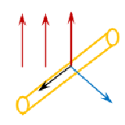

После выяснения природы ЭДС индукции, возникающей в неподвижном проводнике, находящемся в изменяющемся магнитном поле, мы узнали о свойствах электрического поля, отличающегося от того, что создаётся точечными зарядами. Также мы узнали о том, что работа по замкнутому контуру в поле, создаваемом точечными зарядами, равна нулю, а в вихревом поле не равна нулю. Именно это поле вызывает ЭДС в проводнике. Однако, если проводник будет двигаться в постоянном магнитном поле, на концах проводника возникнет разность потенциалов, там тоже возникнет ЭДС. Но природа этой силы будет другая. На этом уроке мы выясним природу ЭДС в проводнике, движущемся в магнитном поле.
Для того чтобы установить природу силы в проводнике, который движется в магнитном поле, проведём эксперимент. Предположим, что в вертикальном однородном магнитном поле с индукцией (\( \vec{B} \)) расположен горизонтальный проводник длиной (\( l \)), который движется с постоянной скоростью (\( \vec{v} \)) перпендикулярно вектору магнитной индукции магнитного поля. Если подсоединить к концам этого проводника чувствительный вольтметр, то увидим, что он покажет наличие разности потенциалов на концах этого проводника. Выясним, откуда берётся это напряжение. В данном случае нет контура и нет изменяющегося магнитного поля, поэтому мы не может сказать, что движение электронов в проводнике возникло в результате появления вихревого электрического поля. Когда проводник движется, как единое целое (рис. 1), у зарядов проводника и у положительных ионов, которые находятся в узлах кристаллической решётки, и у свободных электронов возникает скорость направленного движения.

Рис. 1
На эти заряды будет действовать сила Лоренца со стороны магнитного поля. Согласно правилу «левой руки»: четыре пальца, расположенные по направлению движения, ладонь разворачиваем так, чтобы вектор магнитной индукции входил в тыльную сторону, тогда большой палец укажет действие силы Лоренца на положительные заряды.
Сила Лоренца, действующая на заряды, равна произведению модуля заряда, который она переносит, умноженной на модуль магнитной индукции, на скорость и синус угла между вектором магнитной индукции и вектором скорости.
Эта сила будет совершать работу по переносу электронов на малые расстояния вдоль проводника.
Тогда полная работа силы Лоренца вдоль проводника будет определяться силой Лоренца, умноженной на длину проводника.
Отношение работы сторонней силы по перемещению заряда к величине перенесённого заряда по определению ЭДС.
Итак, природа возникновения ЭДС индукции – это работа силы Лоренца. Однако, формулу 10.4. можно получить формально, исходя из определения ЭДС электромагнитной индукции, когда проводник перемещается в магнитном поле, пересекая линии магнитной индукции, перекрывая некоторую площадку, которую можно определить как произведение длины проводника на перемещение, которое можно выразить через скорость и время движения. ЭДС индукции по модулю равно отношению изменения магнитного потока ко времени.
Модуль магнитной индукции постоянный, но изменяется площадь, которая покрывает проводник.
После подстановки, выражения в формулу 10.5. и сокращения получим:
Сила Лоренца, действующая вдоль проводника, за счёт чего происходит перераспределение зарядов – это лишь одна составляющая сил. Также имеется вторая составляющая, которая возникает именно в результате движения зарядов. Если электроны начинают перемещаться по проводнику, а проводник находится в магнитном поле, то тогда начинает действовать сила Лоренца, и направлена она будет против движения скорости проводника. Таким образом, суммирующая сила Лоренца будет равна нулю.
Когда неподвижный проводник находится в изменяющемся магнитном поле и когда сам проводник движется в постоянном магнитном поле, возникает явление электромагнитной индукции. И в том, и в другом случае возникает ЭДС индукции. Однако природа этой силы различна.